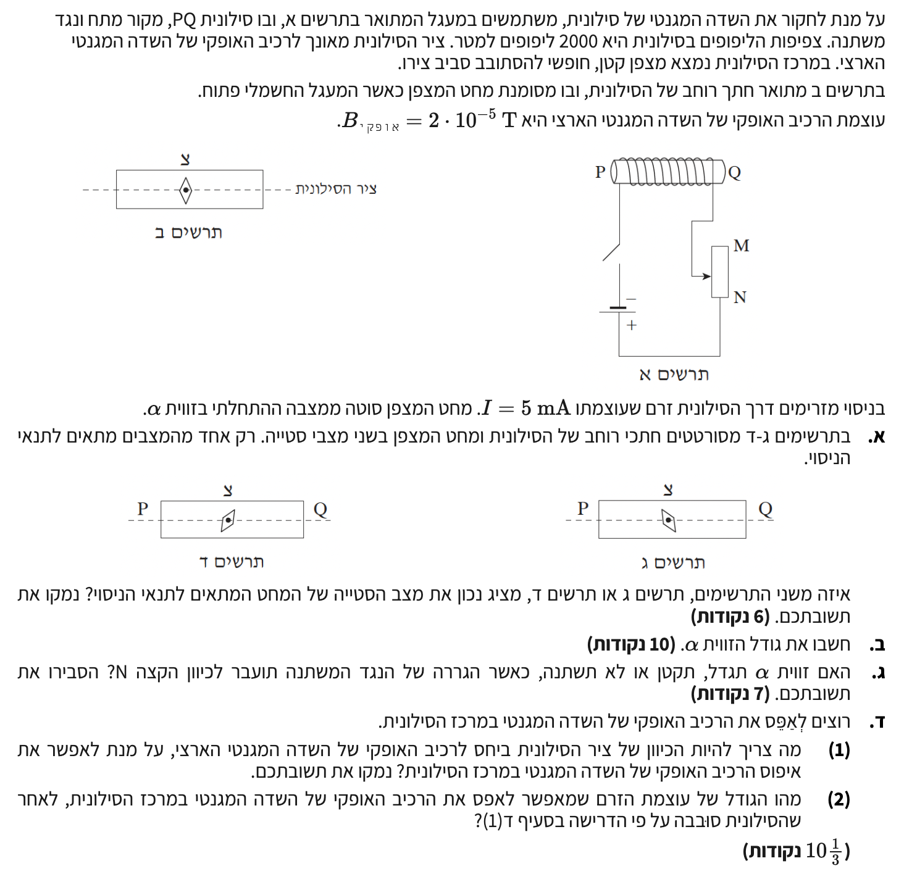

פתרון צעד-אחר-צעד: שדות מגנטיים בסילונית, כדור הארץ, וחישובי זרם.

לזהות איזה מהתרשימים (ג' או ד') מתאר נכונה את מצב מחט המצפן לאחר סגירת המעגל, ולנמק את הבחירה.
ראשית, עלינו למצוא את כיוון הזרם בסילונית. הזרם זורם תמיד מהקוטב החיובי של מקור המתח אל הקוטב השלילי. בתרשים א', הקוטב החיובי נמצא למטה. נתחקה אחר מסלול הזרם: הזרם יוצא מהקוטב החיובי, עובר דרך הנגד המשתנה ונכנס לסילונית בנקודה Q (בצדה הימני).
כעת נתבונן בליפופי הסילונית. על פי השרטוט, הזרם הנכנס מנקודה Q בצידה הימני של הסילונית, עולה כלפי מעלה בחזית הצילינדר, עובר מעליו, ויורד כלפי מטה בחלקו האחורי.
על פי כלל יד ימין (עבור סילונית), נכרוך את אצבעות כף יד ימין סביב הסילונית כך שהן מצביעות כלפי מעלה בחזית (ככיוון הזרם בחזית הליפופים). האגודל יורה שמאלה, וזהו כיוון השדה המגנטי \( B_s \) בתוך הסילונית.
לפני סגירת המעגל (תרשים ב'), המצפן מצביע במקביל לשדה המגנטי של כדור הארץ \( B_E \), המכוון מאונך לציר הסילונית ("כלפי מעלה" בשרטוט). לאחר סגירת המעגל, פועלים במרכז הסילונית שני שדות מגנטיים:
מחט המצפן תצביע בכיוון השדה השקול \( \vec{B}_{tot} \), כלומר שמאלה ולמעלה ביחס למישור הדף. תרשים ג' מתאר מצב זה במדויק.
מסקנה: תרשים ג' מציג נכון את המצב.
לחשב את גודל הזווית \( \alpha \).
ראשית, נחשב את גודל השדה המגנטי הנוצר על ידי הסילונית במרכזה. נשתמש בנתון של צפיפות הליפופים \( \frac{N}{L} = 2000 \):
הזווית \( \alpha \) מסומנת בתרשים בין ציר ה-Y (כיוון \( B_E \)) לבין מחט המצפן (כיוון \( B_{tot} \)). לכן, הניצב מול הזווית הוא וקטור השדה של הסילונית \( B_s \), והניצב שליד הזווית הוא וקטור שדה כדור הארץ \( B_E \):
מסקנה: גודל הזווית אלפא הוא \( \alpha = 32.1^\circ \).
גוררים את המגע הנייד (החץ) של הנגד המשתנה לעבר קצה N (כלפי מטה).
לקבוע האם הזווית \( \alpha \) תגדל, תקטן, או לא תשתנה, ולהסביר את התהליך הפיזיקלי.
הנגד המשתנה מחובר למעגל כך שהזרם נכנס דרך המגע הנייד (החץ) ויוצא מנקודה N. לכן, ההתנגדות הפעילה במעגל תלויה באורך קטע הנגד שבין המגע הנייד לנקודה N. כאשר גוררים את המגע הנייד לכיוון נקודה N (מטה), אורך הקטע \( \ell \) דרכו עובר הזרם קטן.
כתוצאה מכך, ההתנגדות הכוללת של המעגל \( R_T \) קטנה. על פי חוק אוהם, עוצמת הזרם במעגל \( I \) תגדל, כיוון שמתח המקור קבוע.
השדה המגנטי של הסילונית נמצא ביחס ישר לעוצמת הזרם (\( B_s \propto I \)), ולכן גם הוא יגדל. השדה המגנטי של כדור הארץ \( B_E \) אינו משתנה.
כפי שראינו, \( \tan\alpha = \frac{B_s}{B_E} \). מכיוון שהמונה גדל והמכנה נשאר קבוע, ערכו של הטנגנס יגדל, ובהתאם לכך גודל הזווית \( \alpha \) יגדל.
מסקנה: הזווית \( \alpha \) תגדל.
מעוניינים לאפס לחלוטין את הרכיב האופקי של השדה המגנטי השקול במרכז הסילונית.
איפוס השדה משמעותו שהשדה השקול יהיה וקטור אפס. דבר זה יתאפשר רק אם השדה שמייצרת הסילונית \( \vec{B}_s \) מבטל בדיוק את השדה האופקי של כדור הארץ \( \vec{B}_E \). כלומר, עליהם להיות בעלי גודל זהה וכיוונים מנוגדים בדיוק.
שדה כדור הארץ פועל תמיד בכיוון צפון-דרום. אם הסילונית תונח כך שהיא מייצרת שדה שיש לו אפילו קצת נטייה למזרח או למערב, אי אפשר יהיה לאפס את המערכת. למה? כי לכדור הארץ אין שום שדה מגנטי טבעי בכיוון מזרח-מערב שיכול לבטל את החריגה הזו. כלומר, שדה שקול יכול להיות אפס אך ורק אם השדות פועלים על אותו ציר בדיוק.
מכיוון שקווי השדה המגנטי של סילונית מקבילים לציר שלה (בתוך הסילונית), הרי שכדי שהשדה \( B_s \) יהיה מנוגד לשדה כדור הארץ, יש לכוון את ציר הסילונית כך שיהיה מקביל לחלוטין לכיוון של השדה המגנטי האופקי של כדור הארץ (כלומר, על ציר צפון-דרום המגנטי).
מסקנה (1): ציר הסילונית צריך להיות מקביל לכיוון הרכיב האופקי של השדה המגנטי הארצי (צפון-דרום).
לאחר שהסילונית הוצבה בכיוון הנכון, נדרוש שוויון גדלים בין השדות: \( B_s = B_E \).
נבודד את הזרם במשוואה:
מסקנה (2): גודל הזרם הנדרש כדי לאפס את השדה המגנטי הוא \( I = 7.96 \text{ mA} \).